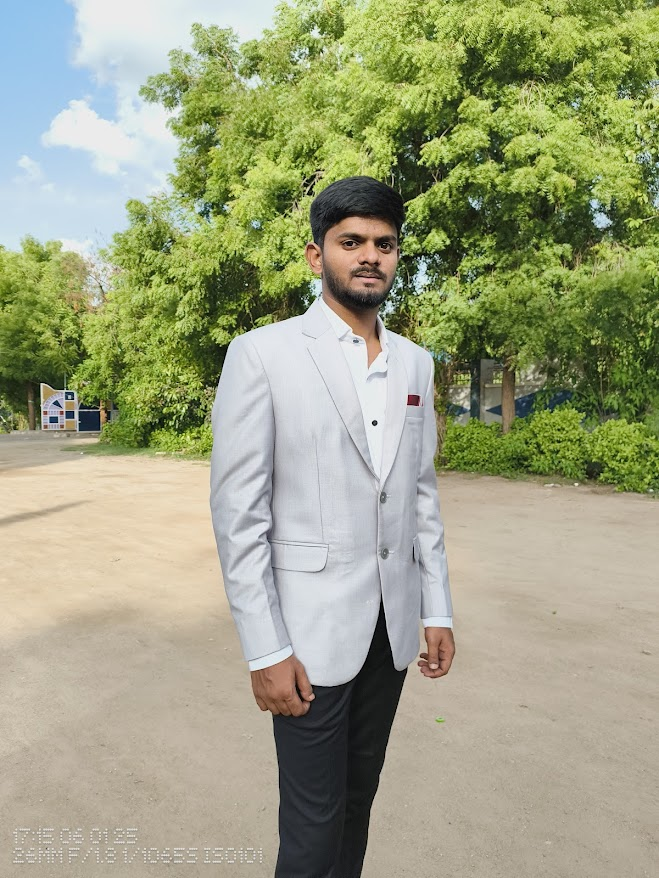
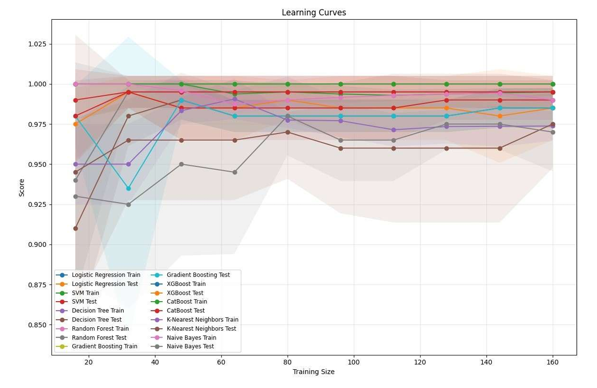

Syed Salahuddin Quadri — final-year AI & ML student and computer vision researcher at IISc Bangalore. Vehicle re-identification, multi-object tracking, and self-supervised Vision Transformers on messy, real-world imagery.

I work on computer vision problems where the data fights back — occlusion, viewpoint changes, bad lighting, real traffic cameras in Bengaluru. At the VISTA Lab (CiSTUP, IISc) I build vehicle re-identification and multi-object tracking pipelines on real-world surveillance video, advised by Dr. Punit Rathore.
Before that: keypoint-detection models for auto-rickshaw pose estimation at the Center of Data for Public Good, IISc, and TTS benchmarking in industry. I care about first-principles vision research for autonomous systems — the kind that has to work outside the lab, not just on the benchmark.
Image-only multitask framework: DINOv3 ViT with domain-specific self-supervised pretraining on 14k+ unlabeled dermoscopic images, jointly predicting malignancy and Breslow thickness. AUROC 0.967 · MAE 0.137 mm.
Ensemble models (Random Forest, XGBoost) for CKD detection with SHAP-based explainability and clinical validation of feature contributions.
Dual-head DINOv3 architecture for simultaneous melanoma classification and continuous Breslow thickness regression, pretrained on 14k+ unlabeled dermoscopic images.

Chronic kidney disease prediction with Random Forest and XGBoost, interpreted through SHAP so clinicians can see why the model decided what it did.
Open to research collaborations, internships, and hard computer-vision problems. The fastest way to reach me is email.